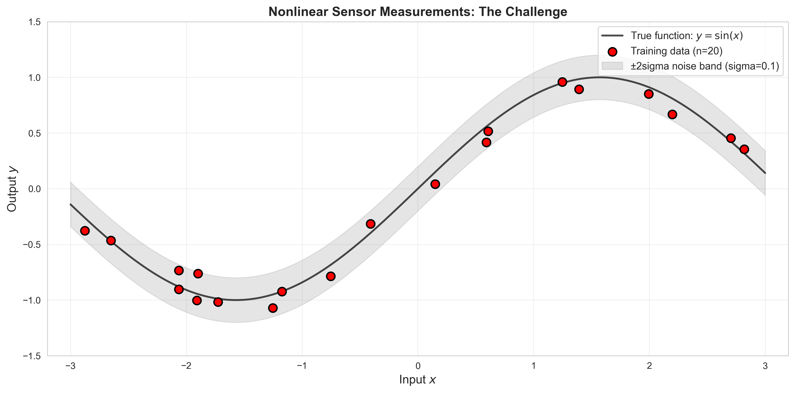
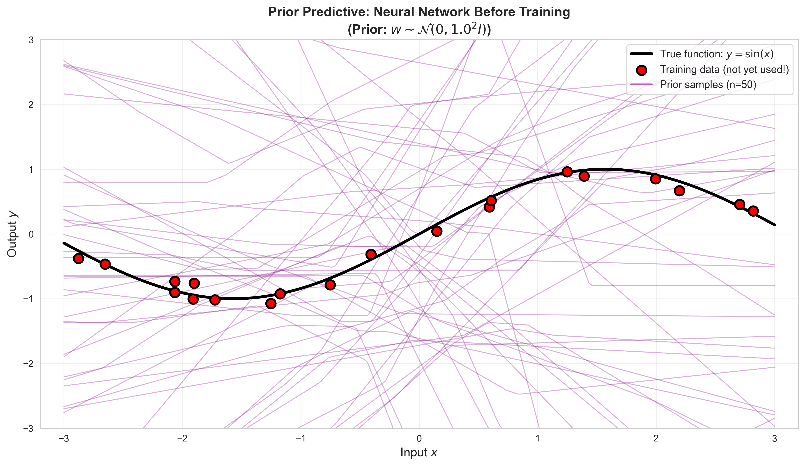
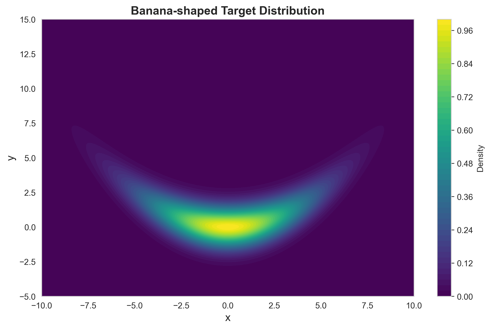
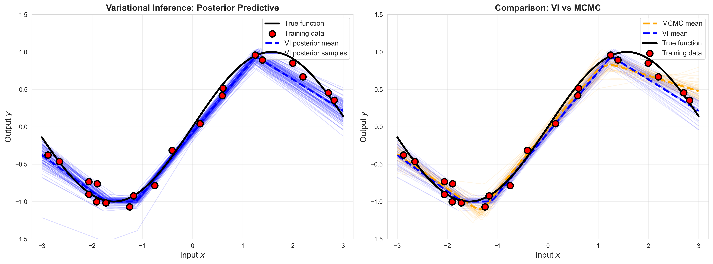

Understand Bayesian inference for regression and how it quantifies model uncertainty
Visualize the posterior predictive distribution for linear models
Recognize the limitations of linear models on nonlinear data
Learn how neural networks provide flexible nonlinear models
Understand why exact Bayesian inference becomes intractable for neural networks
Implement Variational Inference (VI) as an approximate solution
Compare VI to MCMC and understand the speed vs. accuracy tradeoff
Visualize predictive uncertainty in function space
The Big Picture
Imagine you have sparse sensor measurements from a mechanical system. You want to:
Fit a model that captures the underlying relationship
Quantify uncertainty in predictions (critical for safety-critical systems)
Make predictions with confidence intervals
This notebook shows you how to do this using Bayesian inference, starting with simple linear models and progressing to flexible neural networks where variational inference becomes essential.
7.1 Motivation and Toy Problem Definition
Let’s start with a fundamental question: when you fit a model to data, how confident should you be in its predictions?
In traditional machine learning, we find a single “best” set of parameters. But in engineering, we often need to know: - How uncertain are we about the model? - Where in the input space are predictions reliable? - What happens if we had slightly different data?
Bayesian inference answers these questions by maintaining a distribution over models rather than picking a single one.
7.1.1 The Dataset: Nonlinear Sensor Measurements
We’ll use a simple nonlinear function to represent sensor data: \[y = \sin(x) + \epsilon, \quad \epsilon \sim \mathcal{N}(0, 0.1^2)\]
This represents, for example: - Cyclic behavior (vibrations, temperatures, etc.) - Noisy measurements - Sparse observations (we won’t measure everywhere)
We will be interested in understanding how the model can capture the uncertainty of its prediction.
Show Code
# Setup and importsimport mathimport numpy as npimport matplotlib.pyplot as pltimport seaborn as snsimport torchimport torch.nn as nnimport torch.nn.functional as Ffrom torch.optim import Adamfrom typing import Tupleimport ipywidgets as widgets# Set stylesns.set_style('whitegrid')plt.rcParams['figure.dpi'] =300plt.rcParams['savefig.dpi'] =300# Set random seeds for reproducibilitynp.random.seed(42)torch.manual_seed(42)
<torch._C.Generator at 0x280584e30f0>
Show Code
# Generate nonlinear datasetdef generate_nonlinear_data(n_samples: int=20, noise_std: float=0.1, x_range: Tuple[float, float] = (-3, 3)) -> Tuple[np.ndarray, np.ndarray]:""" Generate sparse noisy samples from a sinusoidal function. This simulates sensor measurements from a cyclic process. Args: n_samples: Number of observations noise_std: Standard deviation of measurement noise x_range: Input domain (min, max) Returns: x: Input locations (n_samples,) y: Noisy measurements (n_samples,) """ x_min, x_max = x_range# Sample input locations (sparse, irregular spacing) x = np.random.uniform(x_min, x_max, n_samples)# True underlying function (unknown to the model) y_true = np.sin(x)# Add measurement noise y = y_true + noise_std * np.random.randn(n_samples)# Sort for easier visualization sort_idx = np.argsort(x) x = x[sort_idx] y = y[sort_idx]return x, y# Generate training datan_train =20noise_std =0.1x_train, y_train = generate_nonlinear_data(n_train, noise_std)# Create dense grid for visualization (the "true" function)x_test = np.linspace(-3, 3, 200)y_test_true = np.sin(x_test)# Visualize the datasetfig, ax = plt.subplots(figsize=(12, 6))# Plot true functionax.plot(x_test, y_test_true, 'k-', linewidth=2, label='True function: $y = \sin(x)$', alpha=0.7)# Plot noisy training observationsax.scatter(x_train, y_train, s=80, c='red', edgecolors='black', linewidth=1.5, zorder=5, label=f'Training data (n={n_train})')# Shade noise regionax.fill_between(x_test, y_test_true -2*noise_std, y_test_true +2*noise_std, alpha=0.2, color='gray', label=f'±2sigma noise band (sigma={noise_std})')ax.set_xlabel('Input $x$', fontsize=13)ax.set_ylabel('Output $y$', fontsize=13)ax.set_title('Nonlinear Sensor Measurements', fontsize=14, fontweight='bold')ax.legend(fontsize=11, loc='upper right')ax.grid(True, alpha=0.3)ax.set_xlim([-3.2, 3.2])ax.set_ylim([-1.5, 1.5])plt.tight_layout()plt.show()

7.2 Linear Bayesian Regression
Let’s start with the simplest approach: linear regression with Bayesian inference.
7.2.1 The Model
We assume a linear relationship: \[y = w_0 + w_1 x + \epsilon, \quad \epsilon \sim \mathcal{N}(0, \sigma^2)\]
In Bayesian inference, we place a prior over the weights: \[p(\mathbf{w}) = \mathcal{N}(\mathbf{0}, \alpha^{-1} \mathbf{I})\]
After seeing data \((X, Y)\), the posterior over weights is: \[p(\mathbf{w} | X, Y) = \mathcal{N}(\mathbf{m}_N, \mathbf{S}_N)\]
where (for linear-Gaussian models, we can derive it exactly): \[\mathbf{S}_N = (\alpha \mathbf{I} + \beta \mathbf{\Phi}^T \mathbf{\Phi})^{-1}\]\[\mathbf{m}_N = \beta \mathbf{S}_N \mathbf{\Phi}^T \mathbf{y}\]
where \(\beta = 1/\sigma^2\) is the noise precision and \(\mathbf{\Phi}\) is the design matrix.
7.2.2 The Posterior Predictive Distribution
For a new input \(x_*\), the predictive distribution integrates over all possible weights: \[p(y_* | x_*, X, Y) = \int p(y_* | x_*, \mathbf{w}) p(\mathbf{w} | X, Y) d\mathbf{w}\]
For linear-Gaussian models, this is also Gaussian: \[p(y_* | x_*, X, Y) = \mathcal{N}(\mathbf{m}_N^T \phi(x_*), \sigma_N^2(x_*))\]
The variance \(\sigma_N^2(x_*)\) tells us how uncertain we are about predictions at \(x_*\).
Let’s implement this and see what happens when applied to our non-linear data.
class BayesianLinearRegression:""" Bayesian linear regression with Gaussian prior and likelihood. Closed-form posterior over weights for polynomial basis functions. """def__init__(self, degree: int=1, alpha: float=1.0, beta: float=100.0):""" Args: degree: Degree of polynomial basis (1 = linear) alpha: Prior precision (inverse variance) beta: Noise precision (1/sigma^2) """self.degree = degreeself.alpha = alphaself.beta = betaself.m_N =None# Posterior meanself.S_N =None# Posterior covariancedef _design_matrix(self, x: np.ndarray) -> np.ndarray:"""Compute polynomial design matrix.""" x = x.reshape(-1, 1) Phi = np.concatenate([x**i for i inrange(self.degree +1)], axis=1)return Phidef fit(self, X: np.ndarray, y: np.ndarray):"""Compute posterior over weights given training data.""" Phi =self._design_matrix(X) n_features = Phi.shape[1]# Posterior covarianceself.S_N = np.linalg.inv(self.alpha * np.eye(n_features) +self.beta * Phi.T @ Phi)# Posterior meanself.m_N =self.beta *self.S_N @ Phi.T @ yreturnselfdef predict(self, X_test: np.ndarray, return_std: bool=True):""" Posterior predictive distribution. Returns: mean: Predictive mean std: Predictive standard deviation (if return_std=True) """ Phi_test =self._design_matrix(X_test)# Predictive mean y_mean = Phi_test @self.m_Nif return_std:# Predictive variance (includes noise and weight uncertainty) y_var =1.0/self.beta + np.sum(Phi_test @self.S_N * Phi_test, axis=1) y_std = np.sqrt(y_var)return y_mean, y_stdreturn y_meandef sample_weights(self, n_samples: int=100) -> np.ndarray:"""Sample weight vectors from posterior."""return np.random.multivariate_normal(self.m_N, self.S_N, size=n_samples)# Fit linear Bayesian regressionblr = BayesianLinearRegression(degree=1, alpha=1.0, beta=1.0/noise_std**2)blr.fit(x_train, y_train)# Posterior predictive distributiony_pred_mean, y_pred_std = blr.predict(x_test)print("Linear Bayesian Regression Fitted!")print(f"Posterior mean weights: {blr.m_N}")print(f"Posterior std of weights: {np.sqrt(np.diag(blr.S_N))}")
Linear Bayesian Regression Fitted!
Posterior mean weights: [-0.07553835 0.33272507]
Posterior std of weights: [0.0225762 0.01242588]
The linear model fails because the true function is nonlinear. What if we try to use a simple neural network instead?
7.3.1 Architecture
We’ll use a simple 1-hidden-layer network: \[f(x; \mathbf{w}) = \mathbf{w}_2^T \sigma(\mathbf{w}_1 x + \mathbf{b}_1) + b_2\]
where \(\sigma\) is ReLU activation. With just 5 hidden units, this can approximate smooth nonlinear functions.
7.3.2 The New Challenge: Intractable Posterior
Unlike linear regression, the posterior \(p(\mathbf{w} | X, Y)\) is no longer Gaussian! We cannot compute it analytically.
However, we can still: 1. Define a prior\(p(\mathbf{w})\) (e.g., Gaussian on all weights) 2. Sample functions from the prior to see what kinds of functions are admissible under the model 3. Later, we can use VI or MCMC to approximate the posterior
Let’s first see what the prior predictive distribution looks like.
class SmallNN(nn.Module):""" Simple 1-hidden-layer neural network for regression. """def__init__(self, hidden_size: int=5):super().__init__()self.fc1 = nn.Linear(1, hidden_size)self.fc2 = nn.Linear(hidden_size, 1)def forward(self, x): x = x.view(-1, 1) h = F.relu(self.fc1(x)) y =self.fc2(h)return y.squeeze()def get_weights_flat(self) -> torch.Tensor:"""Get all weights as a flat vector."""return torch.cat([p.flatten() for p inself.parameters()])def set_weights_flat(self, w_flat: torch.Tensor):"""Set all weights from a flat vector.""" offset =0for p inself.parameters(): n_params = p.numel() p.data = w_flat[offset:offset+n_params].view(p.shape) offset += n_params# Create network and count parametershidden_size =5model = SmallNN(hidden_size=hidden_size)n_params =sum(p.numel() for p in model.parameters())print("Neural Network Architecture:")print(f" Input → {hidden_size} hidden (ReLU) → 1 output")print(f" Total parameters: {n_params}")print("Parameter breakdown:")for name, param in model.named_parameters():print(f" {name}: shape {param.shape}, count {param.numel()}")
# Sample functions from the PRIOR (before seeing any data)def sample_prior_functions(model, x_test, n_samples=20, prior_std=1.0):""" Sample function predictions from prior p(w) = N(0, prior_std^2 * I). """ x_test_tensor = torch.FloatTensor(x_test) predictions = []with torch.no_grad():for _ inrange(n_samples):# Sample weights from priorfor param in model.parameters(): param.data.normal_(0, prior_std)# Forward pass y_pred = model(x_test_tensor).numpy() predictions.append(y_pred)return np.array(predictions)# Generate prior predictive samplesprior_std =1.0n_prior_samples =50prior_predictions = sample_prior_functions(model, x_test, n_prior_samples, prior_std)# Visualize prior predictive distributionfig, ax = plt.subplots(figsize=(12, 7))# Plot prior function samplesfor i inrange(n_prior_samples): ax.plot(x_test, prior_predictions[i], 'purple', alpha=0.3, linewidth=1)# Plot true function and dataax.plot(x_test, y_test_true, 'k-', linewidth=3, label='True function: $y = \sin(x)$', zorder=10)ax.scatter(x_train, y_train, s=100, c='red', edgecolors='black', linewidth=2, zorder=15, label='Training data (not yet used!)')# Add dummy line for legendax.plot([], [], 'purple', alpha=0.6, linewidth=2, label=f'Prior samples (n={n_prior_samples})')ax.set_xlabel('Input $x$', fontsize=13)ax.set_ylabel('Output $y$', fontsize=13)ax.set_title(f'Prior Predictive: Neural Network Before Training\n(Prior: $w \sim \mathcal{{N}}(0, {prior_std}^2 I)$)', fontsize=14, fontweight='bold')ax.legend(fontsize=11, loc='upper right')ax.grid(True, alpha=0.3)ax.set_xlim([-3.2, 3.2])ax.set_ylim([-3, 3])plt.tight_layout()plt.show()

We can see that just sampling functions from the prior, the possible Neural Network functions are a lot more diverse that those we could sample from the linear model. But how do we find out which of these weights are (probabilistically) likely?
7.4 MCMC Approximation
The neural network posterior \(p(\mathbf{w} | X, Y)\) is intractable, but we can sample from it using Markov Chain Monte Carlo (MCMC). Before we dive into how to apply this to neural networks, let’s first gain some intuition on how and why MCMC works on a simple 2D example.
7.4.1 Why can’t we just compute the posterior using regular Monte Carlo Integration?
A classical Monte Carlo approach would involve: 1. Drawing many samples \(\mathbf{w}^{(i)}\) from the prior \(p(\mathbf{w})\), or (as is more common) from a proposal distribution \(q(\mathbf{w})\) that we hope covers the posterior well. 2. Weighting each sample by its likelihood \(p(Y | X, \mathbf{w}^{(i)})\) 3. Normalizing empirically to get an approximate posterior.
This is called importance sampling and while it is conceptually simple, it doesn’t work for many complex models or distributions because the proposal distribution needs to be well matched to the true posterior. If the posterior is concentrated in a small region of parameter space, most samples will have negligible weight, and this will make our “Effective Sample Size” (ESS) very small, i.e., we will need to do lots of sampling, but ultimately throw out most of those samples, so this is inefficient. For low-dimensional, fairly simple distributions, importance sampling can work well, but for high-dimensional models like neural networks or very complex posterior distributions, it typically fails (as we will see below).
To address this, we can use Markov Chain Monte Carlo (MCMC) methods, which adaptively explore the posterior distribution. The key idea is to construct a Markov chain whose stationary distribution is the target posterior distribution. By running the chain for a long time, we can obtain samples that are approximately distributed according to the posterior. It’s main disadvantage is that because many of the samples are correlated, we need many more samples to get a good approximation of the posterior compared to independent sampling methods, but this downside is offset by the fact that MCMC can explore more complex distributions more effectively even using a simple proposal distribution.
7.4.2 What is MCMC?
MCMC methods (like Metropolis-Hastings, Hamiltonian Monte Carlo, and others) generate samples \(\mathbf{w}^{(1)}, \mathbf{w}^{(2)}, \ldots\) from the posterior by: 1. Starting at a random initial weight vector 2. Proposing updated samples that respect the posterior density 3. Eventually converging to samples from \(p(\mathbf{w} | X, Y)\)
So, in a nutshell, it allows you to generate plausible samples from \(p(\mathbf{w} | X, Y)\) without ever having to strictly compute the posterior.
Pros: Asymptotically exact (given infinite samples) Cons: Slow, especially for high-dimensional models
For our small network, MCMC is feasible. We will use it as a reference to compare against variational inference at the end of this notebook.
7.4.3 Note on Implementation
For this notebook, we’ll use a simple Metropolis-Hastings sampler, although many more advanced algorithms exist.1
1 There are some tricks to reduce the variance by subtracting a moving “baseline” average to the advantage term, which is implemented below, but we will not go into the details of this here.
7.4.3.1 The Metropolis-Hastings Algorithm
The algorithm works as follows:
Initialize: Start with random weights \(\mathbf{w}^{(0)}\)
Propose: Generate a candidate \(\mathbf{w}^* \sim q(\mathbf{w}^* | \mathbf{w}^{(t)})\) (typically a Gaussian centered at current weights)
Repeat: Continue for many iterations until the chain converges
The useful thing about this sampler (and indeed MCMC approaches in general), is that we only ever need to evaluate the unnormalized posterior (likelihood x prior), and thus can avoid computing the intractable normalizing constant.
Key Caveats (with Metropolis-Hastings or MCMC methods in general): - You cannot just take individual samples and treat them as independent draws from the posterior, since the starting location of one sample was dependent on the location of the last sample. This means that the samples are correlated. In practice, this means you will need to discard the first certain number of samples (this is called “Burn In”) and also consider only keeping every K number of samples (this is called “Thinning”) so that the MCMC samples become less correlated with one another and more like true independent samples from the posterior. - While the proposal distribution can be simple (e.g., Gaussian), its parameters (like standard deviation) need to be carefully tuned since if it is too large we will have low sample acceptance rates, but it is is too small we will explore the space very slowly, requiring many more samples to converge.
For the 2D example we will do next, MCMC works very well and will give us a good approximation of the posterior. For our 16-parameter network that we will return to later in the notebook, MCMC sampling is still tractable. For modern deep networks with millions of parameters, however, MCMC becomes prohibitively slow and this is where Variational Inference can come to the rescue, as we will see later in the second part of the notebook.
7.4.4 Toy Example: 2D Posterior Sampling from the Banana Distribution
We will start with a simple 2D example to illustrate how MCMC works. This will come from the famous “Banana Distribution”, which is a common test case for MCMC methods due to its curved, non-Gaussian shape, as we can see below.
Show Code
# Reuse global RNG seed for reproducibility (already set above)rng = np.random.default_rng(42)# Unnormalized log-density of banana target:# log p~(x,y) = -0.5 * ( x^2/9 + (y - 0.1 x^2)^2 )def log_p_tilde(x: np.ndarray, y: np.ndarray) -> np.ndarray: x = np.asarray(x) y = np.asarray(y)return-0.5* ( (x**2) /9.0+ (y -0.1* x**2)**2 )# Simple isotropic Gaussian proposal q(x,y) = N(0, I)# log q(x,y) = -0.5 * (x^2 + y^2) + const; constants cancel in ratios, so we can drop themdef log_q(x: np.ndarray, y: np.ndarray) -> np.ndarray: x = np.asarray(x) y = np.asarray(y)return-0.5* (x**2+ y**2)print("Defined banana target log-density and Gaussian proposal.")# Now plot the target distribution for visualizationx_vals = np.linspace(-10, 10, 300)y_vals = np.linspace(-5, 15, 300)X, Y = np.meshgrid(x_vals, y_vals)Z = np.exp(log_p_tilde(X, Y))fig, ax = plt.subplots(figsize=(10, 6))contour = ax.contourf(X, Y, Z, levels=50, cmap='viridis')plt.colorbar(contour, ax=ax, label='Density')ax.set_title('Banana-shaped Target Distribution', fontsize=14, fontweight='bold')ax.set_xlabel('x', fontsize=13)ax.set_ylabel('y', fontsize=13)plt.show()
Defined banana target log-density and Gaussian proposal.

We can attempt to do Monte Carlo integration on this distribution, but because of its curved shape, simple importance sampling is unlikely to cover this distribution well, as we can see below:
# Importance Sampling on the banana targetN_is =10_000# Draw from q ~ N(0, I)x_is = rng.normal(size=N_is)*.3y_is = rng.normal(size=N_is)*.3# Unnormalized log weights: log w_i = log p~(x_i,y_i) - log q(x_i,y_i)log_w = log_p_tilde(x_is, y_is) - log_q(x_is, y_is)# Stabilize weights by subtracting max log_wlog_w_shift = log_w - np.max(log_w)w = np.exp(log_w_shift)w_norm = w / np.sum(w)# Effective sample sizeESS =1.0/ np.sum(w_norm**2)# Weighted meansmean_x_is = np.sum(w_norm * x_is)mean_y_is = np.sum(w_norm * y_is)print(f"Importance Sampling: N={N_is}, ESS={ESS:.1f} ({100*ESS/N_is:.1f}% of N)")print(f"Weighted means: E[x]={mean_x_is:.3f}, E[y]={mean_y_is:.3f}")
TipExperiment: Modifying the Importance Sampling Proposal Distribution
What happens if you change the proposal distribution to have a larger or smaller variance? Does this improve the coverage of the posterior?
Compare the Effective Sample Size (ESS) for different proposal variances – does this align with your intuition when you compare the coverage of the sample points with the posterior?
Now that we have seen the limitations of importance sampling, let’s see how MCMC can help us better sample from this complex posterior. We will implement Metropolis-Hastings below:
# Run MCMC## Try changing these and see what happens to the behavior of the MCMC samples# (e.g., no burn-in, different starting point, low vs high sigma)N_mcmc =100_000burn_in =1_000sigma =.1start = (0.0, 0.0)##chain, acc_rate, mean_x_mcmc, mean_y_mcmc = mcmc_banana(N=N_mcmc, sigma=sigma, burn_in=burn_in, start=start, seed=7)print(f"MCMC: N={N_mcmc}, burn-in={burn_in}, sigma={sigma}, acceptance={acc_rate:.2f}")print(f"MCMC means: E[x]={mean_x_mcmc:.3f}, E[y]={mean_y_mcmc:.3f}")
Modify the number of samples, proposal variance, burn-in period, and the starting point. - What happens if the proposal variance is very small? Is the chain able to explore the posterior well? How is this behavior reflected in the acceptance rate or the trace plot? - What happens if the starting point is very far from the high-density region of the posterior? How long does it take for the chain to converge to the target distribution? What does this imply for the burn-in period and how is this reflected in the trace plot? - How do the various factors (proposal variance, starting point, burn-in) interact to affect the acceptance rate and the quality of the samples? Is a higher or lower acceptance rate always better? Why do you think this is?
7.4.5 Why IS struggles and MCMC succeeds
Importance Sampling (IS) relies on a global reweighting of proposal samples. When \(q\) poorly overlaps with the curved high-density region of the banana target, almost all weights are near zero. This leads to a tiny effective sample size (ESS) and high estimator variance.
MCMC with local proposals uses acceptance ratios that only depend on pairwise density ratios. Even with an unnormalized target \(\tilde p\), the normalizing constant cancels and the chain can move along the curved ridge, accumulating many effective samples.
Both methods can use unnormalized \(p\); the practical difference is normalization: IS requires a global normalization of weights, while MCMC only needs local ratios. As dimensionality and curvature increase, IS becomes very brittle unless \(q\) is very well matched to \(p\), whereas MCMC typically remains viable with reasonable proposals.
7.4.6 Returning to Neural Networks (now with MCMC sampling)
Now that we have a good understanding of how MCMC works on a simple 2D example, let’s return to our small neural network and use MCMC to sample from its posterior distribution over weights. This will allow us to approximate the posterior predictive distribution for our nonlinear regression problem. We will add on a few tricks that we didn’t have in our simple 2D example, namely: - We’ll thin out samples in the chain to reduce correlation between samples - We’ll discard a burn-in period to allow the chain to converge before collecting samples (as we did before) - Before starting the MCMC chain, we’ll pretrain the network using MAP estimation to find a good starting point for the chain.
# Simple MCMC sampler for neural network weightsdef log_likelihood(model, x, y, noise_std=0.1):"""Compute log p(y|x,w) for current weights."""with torch.no_grad(): x_tensor = torch.FloatTensor(x) y_pred = model(x_tensor).numpy() log_lik =-0.5* np.sum(((y - y_pred) / noise_std) **2) log_lik -=len(y) * np.log(noise_std * np.sqrt(2* np.pi))return log_likdef log_prior(model, prior_std=1.0):"""Compute log p(w) for current weights.""" log_p =0for param in model.parameters(): log_p -=0.5* torch.sum((param / prior_std) **2).item()return log_pdef metropolis_hastings_nn(x_train, y_train, n_samples=5000, proposal_std=0.01, prior_std=1.0, noise_std=0.1, thin=10):""" Simple Metropolis-Hastings MCMC for neural network weights. Args: thin: Only keep every 'thin'-th sample to reduce autocorrelation Returns: weight_samples: List of weight vectors acceptance_rate: Fraction of proposals accepted """ model = SmallNN(hidden_size=5)# Initialize at MAP estimate (rough approximation: just train briefly) optimizer = torch.optim.Adam(model.parameters(), lr=0.01) x_tensor = torch.FloatTensor(x_train).view(-1, 1) y_tensor = torch.FloatTensor(y_train)print("Finding initial weights (quick MAP estimate)...")for _ inrange(200): optimizer.zero_grad() loss = F.mse_loss(model(x_tensor.squeeze()), y_tensor) loss.backward() optimizer.step()print(f"Starting MCMC sampling ({n_samples} iterations)...")# Current state current_log_posterior = log_likelihood(model, x_train, y_train, noise_std) +\ log_prior(model, prior_std) weight_samples = [] n_accepted =0for i inrange(n_samples):# Propose new weights proposed_model = SmallNN(hidden_size=5)with torch.no_grad():for p_curr, p_prop inzip(model.parameters(), proposed_model.parameters()): p_prop.data = p_curr.data + proposal_std * torch.randn_like(p_curr)# Compute proposed log posterior proposed_log_posterior = log_likelihood(proposed_model, x_train, y_train, noise_std) +\ log_prior(proposed_model, prior_std)# Accept/reject log_alpha = proposed_log_posterior - current_log_posteriorif np.log(np.random.rand()) < log_alpha:# Accept model = proposed_model current_log_posterior = proposed_log_posterior n_accepted +=1# Store sample (with thinning)if i % thin ==0: weight_samples.append(model.get_weights_flat().clone().detach().numpy())if (i +1) %2000==0: acc_rate = n_accepted / (i +1)print(f" Iteration {i+1}/{n_samples}, acceptance rate: {acc_rate:.3f}") acceptance_rate = n_accepted / n_samplesprint(f"MCMC complete! Final acceptance rate: {acceptance_rate:.3f}")return weight_samples, acceptance_rate# Run MCMC (this will take a minute or two)print("Running MCMC to sample from posterior p(w|X,Y)...")print("This may take 1-2 minutes for accurate results.")mcmc_samples, acc_rate = metropolis_hastings_nn( x_train, y_train, n_samples=10_000, proposal_std=0.01, prior_std=1.0, noise_std=noise_std, thin=10)print(f"Collected {len(mcmc_samples)} posterior samples (after thinning)")print(f"Acceptance rate: {acc_rate:.1%}")
7.4.7 Advanced Sampling: Hamiltonian Monte Carlo (HMC)
There have been many substantial improvements to MCMC sampling methods over the past several decades, and one of the main advances came through the recognition that we need not only sample with knowledge of \(q\) and \(p\), but that we could leverage the gradients of \(p\). This was previously very limited or difficult to do, but with the widespread use of Automatic Differentiation libraries became much more powerful.
Upon widespread access to gradients of \(p\), we could now think about sampling processes that could leverage the slope and curvature of the likelihood to guide us toward better samples. One of the mainstream ways to do this is Hamiltonian Monte Carlo which treats sampling as analogous to estimating a dynamical system. Specifically, we treat the samples/parameters as positions, introduce an auxiliary momentum variable, and simulate Hamiltonian dynamics that preserve the joint density, typically using a symplectic integretor, such as the leapfrog integrator. Because the leapfrog integrator follows smooth trajectories, HMC avoids the random walk behaviour that slowed down our Metropolis–Hastings chains above. HMC is still fundamentally accepting or rejecting samples like MH did, accept that it’s method of producing new samples is significantly more likely to lead to acceptable samples, and thus can be far more sample efficient.
It does this through a few basic concepts: - It uses the likelihood as a Potential Energy function \(U(\theta) = -\log p(\theta \mid \text{data})\) which pulls particle trajectories toward higher posterior density. - Each particle has Kinetic Energy \(K(\mathbf{p}) = \tfrac{1}{2} \mathbf{p}^\top M^{-1} \mathbf{p}\) which comes from a tunable mass matrix \(M\) that can re-scale parameters. - A symplectic integrator (Leapfrog integration) alternates half-steps in momentum with full steps in position and nearly conserves energy.
The algorith itself is fairly straightforward in that you:
Sample a fresh momentum from \(\mathcal{N}(0, M)\) to randomize the next trajectory.
Integrate the Hamiltonian dynamics for \(L\) leapfrog steps with step size \(\varepsilon\).
Apply a Metropolis accept/reject step using the Hamiltonian.
Some pecularities with HMC include: - Smaller step size \(\varepsilon\) improves accuracy but increases computation. If step sizes are too large, it can overshoot and causes many sample rejections. - The number of leapfrog steps \(L\) controls how far each proposal travels across the posterior ridge. Too small and the samples become auto-correlated since the sample cannot move far enough away from the current sample. - A well-chosen mass matrix and initial adaptation help HMC cope with areas of strong curvature in the posterior. - HMC relies on gradients, so we need target distributions that are differentiable and numerically stable.
Below we implement a minimal HMC sampler for the banana distribution so you can compare its behaviour with the random-walk MH sampler above.
# Hamiltonian Monte Carlo on the banana targetdef grad_log_p_tilde(x: np.ndarray, y: np.ndarray) -> np.ndarray:"""Compute the gradient of the banana log-density with respect to (x, y).""" x = np.asarray(x) y = np.asarray(y) grad_x =-x /9.0+0.2* x * (y -0.1* x**2) grad_y =-(y -0.1* x**2)return np.stack([grad_x, grad_y], axis=-1)def hmc_banana(num_samples: int=8_000, burn_in: int=1_000, step_size: float=0.25, num_leapfrog: int=20, mass: np.ndarray |float=1.0, start: tuple[float, float] = (0.0, 0.0), seed: int=2024) ->tuple[np.ndarray, float]:"""Run a basic HMC sampler with (scalar or diagonal) mass matrix for the banana target.""" rng_local = np.random.default_rng(seed) q_current = np.array(start, dtype=float)if q_current.shape != (2,):raiseValueError("start must be a length-2 tuple or array.") mass_array = np.asarray(mass, dtype=float)if mass_array.ndim ==0: mass_vec = np.full(2, mass_array.item())elif mass_array.shape == (2,): mass_vec = mass_arrayelse:raiseValueError("mass must be a scalar or length-2 array for this example.")if np.any(mass_vec <=0):raiseValueError("mass components must be positive.") inv_mass =1.0/ mass_vec logp_current = log_p_tilde(q_current[0], q_current[1]) samples = np.zeros((num_samples, 2), dtype=float) accepts =0for i inrange(num_samples):# Sample fresh momentum from N(0, M) with diagonal mass matrix. p_current = rng_local.normal(scale=np.sqrt(mass_vec), size=2) q = q_current.copy() p = p_current.copy()# Leapfrog integration grad = grad_log_p_tilde(q[0], q[1]) p +=0.5* step_size * gradfor lf_step inrange(num_leapfrog): q += step_size * p * inv_mass grad = grad_log_p_tilde(q[0], q[1])if lf_step != num_leapfrog -1: p += step_size * grad p +=0.5* step_size * grad p =-p # Reverse momentum for detailed balance logp_prop = log_p_tilde(q[0], q[1]) current_H =-logp_current +0.5* np.sum((p_current**2) * inv_mass) proposed_H =-logp_prop +0.5* np.sum((p**2) * inv_mass) log_alpha = current_H - proposed_Hif np.log(rng_local.uniform()) <min(0.0, log_alpha): q_current = q logp_current = logp_prop accepts +=1 samples[i] = q_currentif burn_in >= num_samples:raiseValueError("burn_in must be smaller than num_samples.") chain = samples[burn_in:] acc_rate = accepts / num_samplesreturn chain, acc_rate# Run HMC and summarize diagnosticsN_hmc =8_000burn_in_hmc =1_000step_size =0.25num_leapfrog =20mass_vec = np.array([0.7, 1.3]) # Slight re-scaling along x and yhmc_chain, hmc_acc_rate = hmc_banana(num_samples=N_hmc, burn_in=burn_in_hmc, step_size=step_size, num_leapfrog=num_leapfrog, mass=mass_vec, start=(10.0, 10.0), seed=11)mean_x_hmc =float(np.mean(hmc_chain[:, 0]))mean_y_hmc =float(np.mean(hmc_chain[:, 1]))print(f"HMC: N={N_hmc}, burn-in={burn_in_hmc}, step size={step_size}, L={num_leapfrog}, acceptance={hmc_acc_rate:.2f}")print(f"HMC means: E[x]={mean_x_hmc:.3f}, E[y]={mean_y_hmc:.3f}")
Decrease the step size while increasing the leapfrog count so the trajectory length stays similar. What happens to acceptance and exploration?
Try a very large step size or very few leapfrog steps. Do you see the chain reverting to random-walk behaviour?
Replace the scalar mass with a small diagonal matrix (e.g., different masses for \(x\) and \(y\)). Does this help the sampler hug the banana ridge more quickly?
7.5 Variational Inference
MCMC works but is slow, since it essentially has to generate thousands of good samples. In constrast, Variational Inference methods turn the integration problem into an optimization problem. Instead of sampling from \(p(\mathbf{w} | X, Y)\), we:
Choose a tractable family \(q_\phi(\mathbf{w})\) (e.g., Gaussian)
Find \(\phi\) that makes \(q_\phi\) close to the true posterior
Measure “closeness” using the ELBO (Evidence Lower Bound)
7.5.1 Chosing a tractable family \(q_\phi(\mathbf{w})\)
There are many options for this, as we will see in later more advanced notebooks, but for now let’s use something simple: a mean-field Gaussian approximation: \[q_\phi(\mathbf{w}) = \mathcal{N}(\boldsymbol{\mu}_\phi, \text{diag}(\boldsymbol{\sigma}_\phi^2))\]
We will look at two examples below: the first is just a simple 2D Gaussian with a 2D mean vector and two \(\sigma\) s corresponding to a diagonal covariance. Later, we extend this concept to a Neural Network (like we did with MCMC above) each weight in the network will get its own mean and variance, and for our network with n_params parameters, we would then optimize both for all weights, leading to \(2 \times {n_{params}}\) variational parameters.
But, in either case, what should we be optimizing, exactly?
7.5.2 1. Marginal Likelihood (Evidence)
The goal in Bayesian inference is to compute the marginal likelihood (also called the evidence):
Which sounds fine in theory, but this integral is usually intractable for neural networks or other complex models we might be interested in. How can we solve this?
7.5.3 2. Introducing a Variational Distribution
We introduce a tractable distribution \(q_\phi(\mathbf{w})\) to approximate the true posterior \(p(\mathbf{w}|X,Y)\).
So far, this mathematical maneuver hasn’t really bought us much, but we can apply an approximation to help us separate out some terms.
7.5.4 3. Applying Jensen’s Inequality
Jensen’s Inequality states that, for a convex function \(f\):
\[
f(\mathbb{E}[x]) \le \mathbb{E}[f(x)]
\]
and if we apply Jensen’s inequality to the above assuming \(f=\log\) and \(\mathbb{E}=\int\) (note we flip the sign of the inequality since \(\log\) is concave, not convex), we get:
Or, by grouping \(\mathbb{E}_{q_\phi}\left[\log p(\mathbf{w})\right]\) and \(\mathbb{E}_{q_\phi}\left[\log q_\phi(\mathbf{w})\right]\) into the (negative) KL Divergence:
The first term encourages \(q_\phi\) to place mass on weights that explain the data well. This is the Expected log-likelihood and measures How well \(q_\phi\) explains the data.
The second term (the KL divergence) regularizes \(q_\phi\) to stay close to the prior.
This is the objective we will then optimize when we perform variational inference. We will see this first applied to a simple 2D example so that we can understand what is going on, and then later move to a more complex and higher dimension example of a Neural Network.
7.5.6 Example of using VI for the Banana Distribution
Let’s use our concrete example from earlier, the Banana distribution, to illustrate how Variational Inference works. Here we will use a very simple proposal distribution—a Gaussian with a mean and diagonal covariance—which is often called the mean-fild Gaussian approximation as \(q_\phi(\mathbf{w})\). We will then optimize the ELBO to approximate the posterior. That is, we will optimize:
The reason that we are only computing \(\mathbb{E}_{q_\phi}\left[\log p(Y,w|X)\right]\) in this case is because we are using a simple toy distribution where we are computing the joint distribution \(p(Y,w|X)\) directly, rather than having a likelihood and prior separately as we would in a more complex model like a neural network.
# Variational Inference on the banana target distribution with interactive visualizationrng_vi = np.random.default_rng(0)LOG_2PI = math.log(2.0* math.pi)def mf_elbo(mu_vec: torch.Tensor, raw_diag: torch.Tensor, num_samples: int=None) -> torch.Tensor:"""Analytic ELBO for a mean-field (diagonal) Gaussian q. Assumes raw_diag stores log(sigma) for each dimension. Computes E_q[log p] analytically for the banana target: log p(x,y) = -0.5 * ( x^2/9 + (y - 0.1 x^2)^2 ) and uses the closed-form moments of a Gaussian. """# diagonal std and variances sigma = torch.exp(raw_diag) var = sigma**2 mu_x, mu_y = mu_vec[0], mu_vec[1] var_x, var_y = var[0], var[1]# moments for x E_x2 = var_x + mu_x**2# Var(x^2) for Gaussian x ~ N(mu_x, var_x) Var_x2 =2.0* var_x**2+4.0* mu_x**2* var_x# First term in the ELBO# E_q[ (y - 0.1 x^2)^2 ] = Var(y) + (E[y] - 0.1 E[x^2])^2 + 0.01 Var(x^2) E_y_term = var_y + (mu_y -0.1* E_x2) **2+0.01* Var_x2# Second term in the ELBO# E_q[log p] E_log_p =-0.5* (E_x2 /9.0+ E_y_term)# Third term in the ELBO# E_q[log q] for diagonal Gaussian: -0.5*(D + D*log(2π) + 2 * sum(log sigma)) D = mu_vec.numel() sum_log_sigma = torch.sum(raw_diag) E_log_q =-0.5* (D + D * LOG_2PI +2.0* sum_log_sigma)return E_log_p - E_log_qdef run_vi_optimization(num_steps: int=800, lr: float=0.08, record_points: int=60):"""Optimize the ELBO using the mean-field (diagonal) analytic ELBO (mf_elbo). Records intermediate means, covariances (diagonal), and ELBO values for visualization. """ mu = torch.tensor([0.0, 0.0], requires_grad=True) raw_diag = torch.log(torch.ones(2) *2.5) raw_diag.requires_grad_(True) optimizer = Adam([mu, raw_diag], lr=lr) record_every =1 history = {"steps": [], "mu": [], "cov": [], "elbo": []}for step inrange(num_steps): optimizer.zero_grad() elbo = mf_elbo(mu, raw_diag) loss =-elbo loss.backward() optimizer.step()if (step % record_every ==0) or (step == num_steps -1):# build diagonal cov_diagonal and covariance for recording/plotting cov_diagonal = np.diag(np.exp(raw_diag.detach().cpu().numpy())) cov_np = cov_diagonal @ cov_diagonal.T history["steps"].append(step) history["mu"].append(mu.detach().cpu().numpy()) history["cov"].append(cov_np) history["elbo"].append(elbo.detach().cpu().item())return history# Run VI once and cache the trajectory for the interactive plotvi_history = run_vi_optimization(num_steps=150, record_points=150)
What do we notice about the VI approximation compared to MCMC? In what ways is it better or worse? Comparing the ELBO plot versus the MCMC trace plot, what differences do you notice about the convergence behavior of the two methods?
7.5.7 Monte Carlo Variational Inference
By assuming a certain form of the proposal distribution \(q_\phi(\mathbf{w})\), we were able to compute the KL divergence term in closed form and perform VI analytically. However, in more complex models (like neural networks), we often cannot compute these expectations exactly. In such cases, we can resort to using Monte Carlo Variational Inference to approximate the ELBO and its gradients.
Instead of integrating analytically, we draw samples from our Gaussian variational family and use the score-function identity below to update the parameters. This reliance on Monte Carlo introduces sampling noise, so we will see below how the ELBO estimate bounces around and how the mean and covariance of \(q_\phi\) drift across the banana distribution. The only change from the closed-form solution above is how we estimate expectations, where now our gradients still come from the “score function” of the Gaussian.2
2 There are some tricks to reduce the variance by subtracting a moving “baseline” average to the advantage term, which is implemented below, but we will not go into the details of this here.
The score-function identity states that for any distribution \(q_\phi(\mathbf{w})\) parameterized by \(\phi\): \[\nabla_\phi \mathbb{E}_{q_\phi} [f(\mathbf{w})] = \mathbb{E}_{q_\phi} [f(\mathbf{w}) \nabla_\phi \log q_\phi(\mathbf{w})]\]
where in our case, \(f(\mathbf{w}) = \log p(Y|X, \mathbf{w}) + \log p(\mathbf{w}) - \log q_\phi(\mathbf{w}) = \log p(Y,\mathbf{w}|X) - \log q_\phi(\mathbf{w})\). (This allows us to compute gradients of the ELBO with respect to \(\phi\) using samples from \(q_\phi\).)
This score-function identity is also sometimes called the “REINFORCE” gradient estimator in the reinforcement learning literature, as it was first popularized there and uses something called the “log-derivative trick”3 to move the gradient operator inside the expectation: \[
\begin{align*}
\nabla_\phi \mathbb{E}_{q_\phi} [f(\mathbf{w})] &= \nabla_\phi \int q_\phi(\mathbf{w}) f(\mathbf{w}) d\mathbf{w}\\
&= \int f(\mathbf{w}) \nabla_\phi q_\phi(\mathbf{w}) d\mathbf{w} \\
&= \int f(\mathbf{w}) q_\phi(\mathbf{w}) \nabla_\phi \log q_\phi(\mathbf{w}) d\mathbf{w} \\
&= \mathbb{E}_{q_\phi} [f(\mathbf{w}) \nabla_\phi \log q_\phi(\mathbf{w})]\\
\end{align*}
\]
3 Recall that \(\nabla_\phi \log(z) = \frac{\nabla_\phi z}{z}\).
So putting this all together for our toy example case here, we can estimate the gradient of the ELBO as: \[
\begin{align*}
\nabla_\phi \mathcal{L}(\phi) &= \nabla_\phi \mathbb{E}_{q_\phi}\left[\log p(Y,\mathbf{w}|X)\right]
- \nabla_\phi \mathbb{E}_{q_\phi}\left[\log q_\phi(\mathbf{w})\right]\\
&= \mathbb{E}_{q_\phi}\left[\left(\log p(Y,\mathbf{w}|X) - \log q_\phi(\mathbf{w})\right) \nabla_\phi \log q_\phi(\mathbf{w})\right]\\
&\approx \frac{1}{S} \sum_{s=1}^S \left(\log p(Y,\mathbf{w}^{(s)}|X) - \log q_\phi(\mathbf{w}^{(s)})\right) \nabla_\phi \log q_\phi(\mathbf{w}^{(s)}) \quad \text{where } \mathbf{w}^{(s)} \sim q_\phi(\mathbf{w})
\end{align*}
\]
So we can see that this will break down into the following steps:
Sample \(S\) weight vectors \(\mathbf{w}^{(s)}\) from the variational distribution \(q_\phi(\mathbf{w})\)
For each sample, compute the log joint probability \(\log p(Y,\mathbf{w}^{(s)}|X)\) and the log variational probability \(\log q_\phi(\mathbf{w}^{(s)})\). We subtract these to get what is commonly called the “advantage” term, though we can see that it is just the difference between how well the sample explains the data versus how probable it is under the variational distribution, which is also akin to something called the “likelihood ratio”.
Compute the score function \(\nabla_\phi \log q_\phi(\mathbf{w}^{(s)})\) for each sample, which in this case is intuitively the direction (in the model weights) that will increase the log likelihood of the variational distribution.
We multiply these gradients by the advantage term of that sample from step 2. Intuitively, what this is doing is weighting the gradient direction by how much better that sample explains the data versus how probable it is under the variational distribution. If a sample explains the data well but is improbable under \(q_\phi\), we want to move \(q_\phi\) in that direction to increase its probability.
Average these gradients over all \(S\) samples to get an estimate of \(\nabla_\phi \mathcal{L}(\phi)\)
# Monte Carlo VI using score-function gradients for a diagonal Gaussiandef torch_log_p(z: torch.Tensor) -> torch.Tensor: x = z[:, 0] y = z[:, 1]return-0.5* ((x**2) /9.0+ (y -0.1* x**2) **2)def log_q_diag(z: torch.Tensor, mu: torch.Tensor, log_sigma: torch.Tensor) -> torch.Tensor: diff = z - mu inv_var = torch.exp(-2.0* log_sigma) quad = torch.sum(diff**2* inv_var, dim=1) log_det =2.0* torch.sum(log_sigma)return-0.5* (quad + log_det +2.0* LOG_2PI)steps =600batch_size =256lr =0.08record_every =1mu = torch.tensor([0.0, 0.0])log_sigma = torch.log(torch.ones(2) *2.5)mc_history = {"steps": [],"mu": [],"cov": [],"elbo": [],"grad_var_mu": [],"grad_var_log_sigma": []}for step inrange(steps):# Sample from q(z; mu, sigma) sigma = torch.exp(log_sigma) eps = torch.randn(batch_size, 2) z_samples = (mu + sigma * eps).detach()# Compute score-function gradients under samples from q log_p = torch_log_p(z_samples) log_q = log_q_diag(z_samples, mu, log_sigma)# Compute the ELBO gradient estimates (also called the advantage in RL)) advantage = log_p - log_q# Compute score functions for q at the samples score_mu = (z_samples - mu) / (sigma**2) score_log_sigma =-1.0+ (z_samples - mu) **2/ (sigma**2)# Multiply the advantage with the score functions to get gradient estimates grad_mu_samples = advantage.unsqueeze(1) * score_mu grad_log_sigma_samples = advantage.unsqueeze(1) * score_log_sigma# Take the average over the MC samples grad_mu = grad_mu_samples.mean(dim=0) grad_log_sigma = grad_log_sigma_samples.mean(dim=0)# Now we can do a simple gradient ascent step mu = mu + lr * grad_mu log_sigma = log_sigma + lr * grad_log_sigmaif step % record_every ==0or step == steps -1: cov = np.diag(torch.exp(2.0* log_sigma).cpu().numpy()) mc_history["steps"].append(step) mc_history["mu"].append(mu.cpu().numpy()) mc_history["cov"].append(cov) mc_history["elbo"].append(advantage.mean().item()) mc_history["grad_var_mu"].append(grad_mu_samples.var(dim=0, unbiased=False).mean().item()) mc_history["grad_var_log_sigma"].append(grad_log_sigma_samples.var(dim=0, unbiased=False).mean().item())
Final mean: [0.05686871 0.33599067]
Final marginal std: [1.9444891 1.0056936]
Average gradient variance (μ): 5.516
7.5.8 The Reparameterization Trick
From the above we saw that we can now estimate VI updates even if we don’t have a closed form solution, provided that we can compute gradients w.r.t. the score function (essentially the log likelihood of \(q\)), which we could in principle get through something like Automatic Differentiation. However, there is a problem with this: to compute the score function gradients, we need to differentiate through samples drawn from \(q_\phi(\mathbf{w})\). That is, our expectation is over samples \(\mathbf{w} \sim q_\phi(\mathbf{w})\), and the score function \(\nabla_\phi \log q_\phi(\mathbf{w})\) depends on \(\phi\) both directly (since \(q_\phi\) is parameterized by \(\phi\)) and indirectly through the samples \(\mathbf{w}\). This leads to stochasticity in the gradients due to the sampling process, which can result in high-variance gradient estimates.
To get around this, we can use something called the reparameterization trick, whose key idea is to move the stochasticity/randomness outside of the gradient computation. This is done by expressing samples from \(q_\phi(\mathbf{w})\) as a deterministic function of \(\phi\) and some noise variable \(\boldsymbol{\epsilon}\) that is independent of \(\phi\). For example, if \(q_\phi(\mathbf{w})\) is a Gaussian with mean \(\boldsymbol{\mu}_\phi\) and standard deviation \(\boldsymbol{\sigma}_\phi\), we can write: \[\mathbf{w} = \boldsymbol{\mu}_\phi + \boldsymbol{\sigma}_\phi \odot \boldsymbol{\epsilon}, \quad \boldsymbol{\epsilon} \sim \mathcal{N}(0, I)\]
Where the expectation is not over \(\mathbf{w} \sim q_\phi(\mathbf{w})\) anymore, but rather over \(\boldsymbol{\epsilon} \sim \mathcal{N}(0, I)\).
Note now that \(\mathbf{w}\) is still a random variable, but the randomness comes solely from \(\boldsymbol{\epsilon}\), which is independent of \(\phi\). Instead \(\phi\) becomes a deterministic transformation of \(\boldsymbol{\epsilon}\). This allows us to rewrite the ELBO expectation as: \[
\begin{align*}
\nabla_\phi \mathcal{L}(\phi) &= \mathbb{E}_{q_\phi}\left[\left(\log p(Y,\mathbf{w}|X) - \log q_\phi(\mathbf{w})\right) \nabla_\phi \log q_\phi(\mathbf{w})\right]\\
&= \mathbb{E}_{\boldsymbol{\epsilon} \sim \mathcal{N}(0, I)}\left[\left(\log p(Y,\mathbf{w}(\boldsymbol{\epsilon}, \phi)|X) - \log q_\phi(\mathbf{w}(\boldsymbol{\epsilon}, \phi))\right) \nabla_\phi \log q_\phi(\mathbf{w}(\boldsymbol{\epsilon}, \phi))\right]\\
&\approx \frac{1}{S} \sum_{s=1}^S \left(\log p(Y,\mathbf{w}(\boldsymbol{\epsilon}^{(s)}, \phi)|X) - \log q_\phi(\mathbf{w}(\boldsymbol{\epsilon}^{(s)}, \phi))\right) \nabla_\phi \log q_\phi(\mathbf{w}(\boldsymbol{\epsilon}^{(s)}, \phi)) \quad \text{where } \boldsymbol{\epsilon}^{(s)} \sim \mathcal{N}(0, I)
\end{align*}
\]
This subtle change has a few important implications:
The randomness is now isolated in \(\boldsymbol{\epsilon}\), which does not depend on \(\phi\). This means that when we compute gradients w.r.t. \(\phi\), we can treat \(\boldsymbol{\epsilon}\) as a constant. This reduces the variance of our gradient estimates significantly.
The gradients \(\nabla_\phi \log q_\phi(\mathbf{w}(\boldsymbol{\epsilon}, \phi))\) can now be computed using standard automatic differentiation techniques, as \(\mathbf{w}\) is a deterministic function of \(\phi\) and \(\boldsymbol{\epsilon}\).
This trick is particularly useful when \(q_\phi(\mathbf{w})\) is a continuous distribution like a Gaussian, but it can be extended to non-continuous distributions as well, which we may cover in a later notebook.
This approach is sometimes called the “pathwise derivative estimator” because it allows us to compute gradients by following a deterministic path through the parameter space, rather than relying on stochastic sampling, and sits in contrast to “score-function” estimators which rely on sampling directly from the distribution.
Final mean: [0.03177835 0.3603806 ]
Final marginal std: [1.9253347 1.0171496]
Average gradient variance (μ): 1.408
7.5.9 Black-Box Variational Inference
We saw above how to use the reparameterization trick to help reduce variance in estimating the VI update in cases where \(q_\phi(\mathbf{w})\) is a continuous distribution, such as a Gaussian or even a simpler feedforward Neural Network. In many cases (like we will see next in VAEs) this is sufficient and we are good to go.
However, there are certain cases where basic reparameterization will not work. For example, if I pick a variational family \(q_\phi(\mathbf{w})\) that is no longer a nice smooth function of the parameters \(w\), we will not be able to reparameterize \(q_\phi(\mathbf{w})\) into a smoot deterministic function. This is common in cases where the desired \(q_\phi(\mathbf{w})\) has discrete variables, such as clusters or categories.
In such cases, we actually have three options:
We can go back to score estimators like we did earlier in the notebook. We will suffer from higher variance updates but it will at least allow us to train the model even under discrete or non-continuous samples.4 This is the approach we will take below.
We can essentially try to “relax” discontinuities by finding a distribution that can approximate the “hard” or discrete objects we wish to study by variants that can be differentiated through. The price we will pay for this is that the optimal solution to the relaxed version of the model will be slightly biased away from the optimal solution to the original hard problem, but often this approximation error and bias is acceptable. Classical examples of these distributions include the Gumbel-Softmax or Concrete Distribution for relaxing Categorical variables, or the Birkhoff Polytope for relaxing Permutation Matrices. These extensions go beyond what I want to cover in this book, but are fascinating topics to read more about.
There are also classes of “Straight-Through Estimators” which essentially detach certain gradients from the computational graph such that one can sample hard/discrete samples, but then access non-hard gradients when calling automatic differentiation. These inherit similar problems to the relaxed distributions mentioned above, which is that the gradients you compute using Straight-Through estimators are only approximating, in a heuristic sense, the true gradients.
4 There are some tricks to reduce the variance by subtracting a moving “baseline” average to the advantage term, which is implemented below, but we will not go into the details of this here.
We will demonstrate an example below where reparameterization will not be effective by fitting a three member Gaussian Mixture Model as our \(q_\phi(\mathbf{w})\) and resorting to score-function estimators. Note that this below example takes a significantly longer time to fit/train than the examples we have used so far.
Final mixture weights: [0.043 0.906 0.051]
Final mixture means: [[ 5.449 3.545]
[ 0.021 0.365]
[-5.234 3.275]]
Average ELBO estimate: 2.372
With this you now have a high-level overview of some of this major approaches to performing Variational Inference as well as their pros and cons. We can now move on to applying this to a more complex example of the Neural Network from earlier.
7.5.10 Example of using VI for Neural Networks
Since in this case the Neural Network is a continuous and differentiable function, we will leverage the reparameterization trick to allow us to automatically differentiate backwards through the network to perform the VI updates.
# Variational Inference for Bayesian Neural Networkclass BayesianNNVI(nn.Module):""" Bayesian Neural Network with Variational Inference. Each weight has a variational posterior q(w) = N(mu, sigma^2). """def__init__(self, hidden_size=5):super().__init__()self.hidden_size = hidden_size# Variational parameters for layer 1: input -> hiddenself.fc1_mu_weight = nn.Parameter(torch.randn(hidden_size, 1) *0.1)self.fc1_mu_bias = nn.Parameter(torch.randn(hidden_size) *0.1)self.fc1_logsigma_weight = nn.Parameter(torch.ones(hidden_size, 1) *-3) # Start with low varianceself.fc1_logsigma_bias = nn.Parameter(torch.ones(hidden_size) *-3)# Variational parameters for layer 2: hidden -> outputself.fc2_mu_weight = nn.Parameter(torch.randn(1, hidden_size) *0.1)self.fc2_mu_bias = nn.Parameter(torch.randn(1) *0.1)self.fc2_logsigma_weight = nn.Parameter(torch.ones(1, hidden_size) *-3)self.fc2_logsigma_bias = nn.Parameter(torch.ones(1) *-3)def sample_weights(self):"""Sample weights using reparameterization trick."""# Layer 1 fc1_weight =self.fc1_mu_weight + torch.exp(self.fc1_logsigma_weight) * torch.randn_like(self.fc1_mu_weight) fc1_bias =self.fc1_mu_bias + torch.exp(self.fc1_logsigma_bias) * torch.randn_like(self.fc1_mu_bias)# Layer 2 fc2_weight =self.fc2_mu_weight + torch.exp(self.fc2_logsigma_weight) * torch.randn_like(self.fc2_mu_weight) fc2_bias =self.fc2_mu_bias + torch.exp(self.fc2_logsigma_bias) * torch.randn_like(self.fc2_mu_bias)return (fc1_weight, fc1_bias, fc2_weight, fc2_bias)def forward(self, x, sample=True):"""Forward pass with sampled or mean weights.""" x = x.view(-1, 1)if sample: fc1_w, fc1_b, fc2_w, fc2_b =self.sample_weights()else: fc1_w, fc1_b =self.fc1_mu_weight, self.fc1_mu_bias fc2_w, fc2_b =self.fc2_mu_weight, self.fc2_mu_bias# Forward propagation h = F.relu(F.linear(x, fc1_w, fc1_b)) y = F.linear(h, fc2_w, fc2_b)return y.squeeze()def kl_divergence(self, prior_std=1.0):"""Compute KL(q||p) where p is N(0, prior_std^2).""" kl =0# KL for each parameter: KL(N(mu, sigma^2) || N(0, prior_std^2))for mu_param, logsigma_param in [ (self.fc1_mu_weight, self.fc1_logsigma_weight), (self.fc1_mu_bias, self.fc1_logsigma_bias), (self.fc2_mu_weight, self.fc2_logsigma_weight), (self.fc2_mu_bias, self.fc2_logsigma_bias) ]: sigma = torch.exp(logsigma_param) kl +=0.5* torch.sum( (mu_param**2+ sigma**2) / prior_std**2-1-2*logsigma_param +2*np.log(prior_std) )return kldef elbo(self, x, y, n_samples=5, noise_std=0.1, prior_std=1.0):""" Compute the Evidence Lower Bound. ELBO = E_q[log p(y|x,w)] - KL(q||p) """ x = x.view(-1, 1)# Expected log-likelihood (Monte Carlo estimate) log_lik =0for _ inrange(n_samples): y_pred =self.forward(x, sample=True) log_lik +=-0.5* torch.sum(((y - y_pred) / noise_std) **2) log_lik = log_lik / n_samples log_lik -=len(y) * np.log(noise_std * np.sqrt(2* np.pi))# KL divergence kl =self.kl_divergence(prior_std)# ELBO elbo = log_lik - klreturn elbo, log_lik, kl# Initialize variational modelvi_model = BayesianNNVI(hidden_size=5)# Uncomment below if you would like a listing of all parameters and counts:# print("Variational parameters:")# for name, param in vi_model.named_parameters():# print(f" {name}: shape {param.shape}")# n_var_params = sum(p.numel() for p in vi_model.parameters())# print(f"Total variational parameters: {n_var_params}")# print("(2x the number of network weights for mean + variance)")
Show Code
# Train with Variational Inferencevi_model = BayesianNNVI(hidden_size=5)optimizer = torch.optim.Adam(vi_model.parameters(), lr=0.01)x_train_tensor = torch.FloatTensor(x_train)y_train_tensor = torch.FloatTensor(y_train)n_epochs =3000n_mc_samples =5# Monte Carlo samples per ELBO evaluationhistory = {'elbo': [],'log_lik': [],'kl': []}print("Training Bayesian NN with Variational Inference...")print(f"Epochs: {n_epochs}, MC samples: {n_mc_samples}")for epoch inrange(n_epochs): optimizer.zero_grad()# Compute ELBO (negative for minimization) elbo, log_lik, kl = vi_model.elbo(x_train_tensor, y_train_tensor, n_samples=n_mc_samples, noise_std=noise_std, prior_std=1.0) loss =-elbo # Maximize ELBO = minimize negative ELBO# Backprop and update loss.backward() optimizer.step()# Track metrics history['elbo'].append(elbo.item()) history['log_lik'].append(log_lik.item()) history['kl'].append(kl.item())if (epoch +1) %500==0:print(f"Epoch {epoch+1:4d} | ELBO: {elbo.item():8.2f} | "f"Log-lik: {log_lik.item():8.2f} | KL: {kl.item():6.2f}")print("Training complete!")
# Generate VI posterior predictive samplesx_test_tensor = torch.FloatTensor(x_test)vi_predictions = []with torch.no_grad():for _ inrange(100): y_pred = vi_model(x_test_tensor, sample=True).numpy() vi_predictions.append(y_pred)vi_predictions = np.array(vi_predictions)vi_mean = vi_predictions.mean(axis=0)vi_std = vi_predictions.std(axis=0)# Compare VI vs MCMCfig, axes = plt.subplots(1, 2, figsize=(16, 6))# Plot 1: VI Posterior Predictiveax = axes[0]# VI samplesfor i inrange(len(vi_predictions)): ax.plot(x_test, vi_predictions[i], 'blue', alpha=0.15, linewidth=1)# True function and dataax.plot(x_test, y_test_true, 'k-', linewidth=3, label='True function', zorder=10)ax.scatter(x_train, y_train, s=100, c='red', edgecolors='black', linewidth=2, zorder=15, label='Training data')# VI meanax.plot(x_test, vi_mean, 'blue', linewidth=3, label='VI posterior mean', linestyle='--', zorder=5)# Dummy line for legendax.plot([], [], 'blue', alpha=0.6, linewidth=2, label='VI posterior samples')ax.set_xlabel('Input $x$', fontsize=13)ax.set_ylabel('Output $y$', fontsize=13)ax.set_title('Variational Inference: Posterior Predictive', fontsize=14, fontweight='bold')ax.legend(fontsize=11, loc='upper right')ax.grid(True, alpha=0.3)ax.set_xlim([-3.2, 3.2])ax.set_ylim([-1.5, 1.5])# Plot 2: Direct comparison VI vs MCMCax = axes[1]# MCMC samples (lighter)for i inrange(min(50, len(mcmc_predictions))): ax.plot(x_test, mcmc_predictions[i], 'orange', alpha=0.1, linewidth=1)# VI samples (darker)for i inrange(50): ax.plot(x_test, vi_predictions[i], 'blue', alpha=0.1, linewidth=1)# Meansax.plot(x_test, mcmc_mean, 'orange', linewidth=3, label='MCMC mean', linestyle='--')ax.plot(x_test, vi_mean, 'blue', linewidth=3, label='VI mean', linestyle='--')# True function and dataax.plot(x_test, y_test_true, 'k-', linewidth=3, label='True function', zorder=10)ax.scatter(x_train, y_train, s=100, c='red', edgecolors='black', linewidth=2, zorder=15, label='Training data')ax.set_xlabel('Input $x$', fontsize=13)ax.set_ylabel('Output $y$', fontsize=13)ax.set_title('Comparison: VI vs MCMC', fontsize=14, fontweight='bold')ax.legend(fontsize=11, loc='upper right')ax.grid(True, alpha=0.3)ax.set_xlim([-3.2, 3.2])ax.set_ylim([-1.5, 1.5])plt.tight_layout()plt.show()

Note the difference in training times between the MCMC Method and VI Method. The main thing we give up for this increase in speed is the
7.6 Possible Additional Experiments
Now that you understand the full pipeline, you can explore below how some of the fundamental parameters of the model might affect the results:
TipExperiment 1: Vary Hidden Layer Size
Train VI models with hidden_size = 2, 5, 10, 20. Observe: - How does model flexibility change? - Does uncertainty increase or decrease? - Is there a risk of overfitting with larger networks?
TipExperiment 2: Effect of Training Data Size
Generate datasets with n_train = 5, 10, 20, 50. For each: - Train the VI model - Plot posterior predictive distributions - Compare the model uncertainty in data-rich vs data-sparse regions What do you notice?
TipExperiment 3: Prior Sensitivity
Try different prior standard deviations: prior_std = 0.1, 1.0, 10.0. Observe: - How does this affect the learned posterior? - Does a strong prior (small std) regularize more? - What happens with a weak prior (large std)?
We can do Experiment 1 together as an example, and leave the remainder for you to do independently:
Show Code
# Experiment 1: Vary hidden layer sizehidden_sizes_to_test = [2, 5, 10, 20]results_by_size = {}print("Experiment 1: Effect of Hidden Layer Size")print("Training VI models with different architectures...")for h_size in hidden_sizes_to_test:print(f"Training with hidden_size = {h_size}...")# Initialize and train model_exp = BayesianNNVI(hidden_size=h_size) optimizer_exp = torch.optim.Adam(model_exp.parameters(), lr=0.01)for epoch inrange(2000): optimizer_exp.zero_grad() elbo, _, _ = model_exp.elbo(x_train_tensor, y_train_tensor, n_samples=5, noise_std=noise_std, prior_std=1.0) loss =-elbo loss.backward() optimizer_exp.step()# Generate predictions predictions = []with torch.no_grad():for _ inrange(100): y_pred = model_exp(x_test_tensor, sample=True).numpy() predictions.append(y_pred) predictions = np.array(predictions) results_by_size[h_size] = {'predictions': predictions,'mean': predictions.mean(axis=0),'std': predictions.std(axis=0) }print(f" Final ELBO: {elbo.item():.2f}")print("Training complete!")
Experiment 1: Effect of Hidden Layer Size
Training VI models with different architectures...
Training with hidden_size = 2...
Final ELBO: -21.87
Training with hidden_size = 5...
Final ELBO: -21.87
Training with hidden_size = 5...
Final ELBO: -30.33
Training with hidden_size = 10...
Final ELBO: -30.33
Training with hidden_size = 10...
Final ELBO: -45.41
Training with hidden_size = 20...
Final ELBO: -45.41
Training with hidden_size = 20...
Final ELBO: -82.38
Training complete!
Final ELBO: -82.38
Training complete!
Bayesian Inference Quantifies Uncertainty - Instead of a single “best” model, we maintain a distribution over models - The posterior predictive distribution\(p(y_* | x_*, X, Y)\) gives us predictions with uncertainty
Linear Models Have Limitations - Bayesian linear regression has exact, closed-form posteriors (Gaussian) - This allows us to compute predictive mean and variance analytically - However, they cannot capture nonlinear relationships, as we saw in this example
Neural Networks Provide Flexibility at the cost of an intractable posterior - Even a small 1-hidden-layer network can approximate complex functions - Prior predictive shows diverse possible functions before seeing data - Challenge: Posterior \(p(\mathbf{w} | X, Y)\) is no longer tractable.
MCMC: Accurate but Slow - Markov Chain Monte Carlo samples from the true posterior - Pros: Asymptotically exact, unbiased - Cons: Computationally expensive, slow for high-dimensional models - Useful as a reference for validation
Variational Inference: Fast Approximation - Approximate \(p(\mathbf{w} | X, Y)\) with a tractable family \(q_\phi(\mathbf{w})\) - Optimize \(\phi\) to maximize the ELBO: \[\mathcal{L}(\phi) = \mathbb{E}_{q_\phi}\left[\log p(Y | X, \mathbf{w})\right] - \text{KL}(q_\phi(\mathbf{w}) || p(\mathbf{w}))\] - Reparameterization trick enables low-variance gradient estimates - Result: Posterior approximation in seconds instead of minutes
Function Space vs Weight Space - We don’t visualize high-dimensional weight distributions directly - Instead, we visualize functions sampled from the posterior - Posterior predictive is what matters for making predictions!
7.7.1 Looking forward to VAEs (Variational Autoencoders)
The VI approach you learned here is the same mathematical foundation for VAEs. The key differences are:
Here (Bayesian NN): Posterior over weights\(p(\mathbf{w} | X, Y)\)
VAEs: Posterior over latent variables\(p(\mathbf{z} | \mathbf{x})\)
The ELBO, reparameterization trick, and optimization strategy are identical.
Moreover, in VAEs, instead of optimizing \(q_\phi(z)\) separately for each datapoint \(x\), we learn an encoder network\(q_\phi(z | x)\) that works for all\(x\). This is called amortized inference.
Questions to Reflect on
Think about these before moving to the next notebook:
Why does VI underestimate uncertainty?
Hint: Is the Mean-field approximation where we assume independence between weights reasonable? When might it not be?
When would MCMC be essential despite being slow?
Could we use a more expressive variational family?
We used a Mean-field Gaussian here, but are we limited to this?